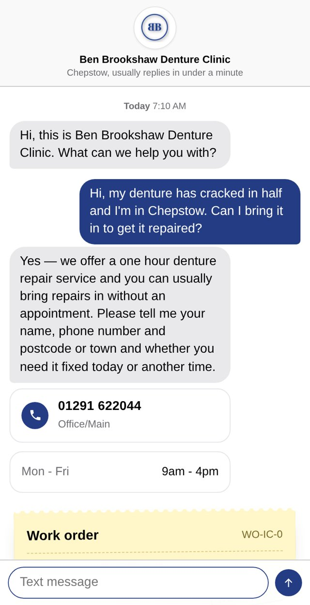

A website assistant for Ben Brookshaw Denture Clinic
It answers your website visitors instantly, day or night, using only what's on your website, and sends you their name, number and what they need.

Try it live Private demo built by Federico Sanua, independent web developer, sanuafederico@gmail.com